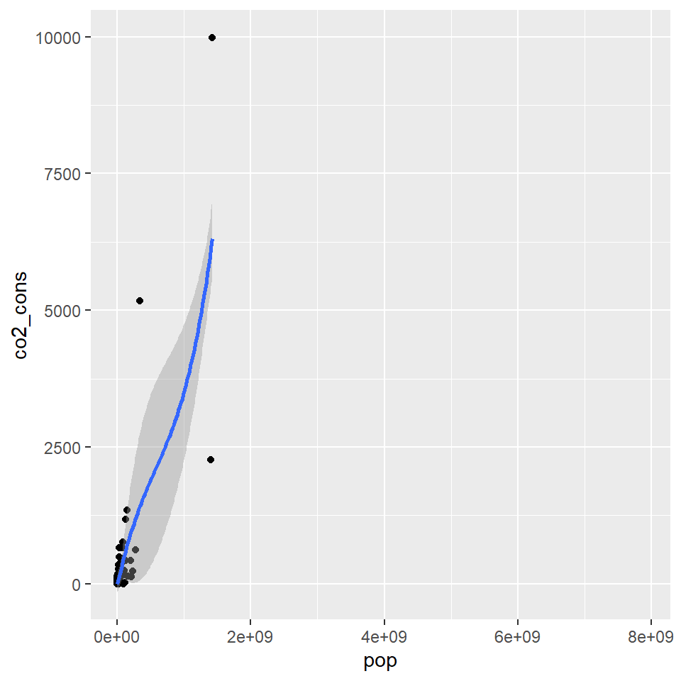
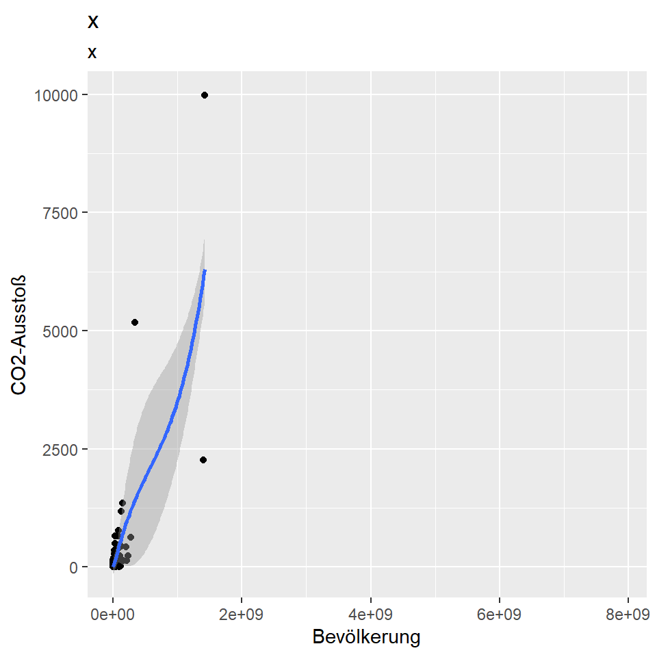
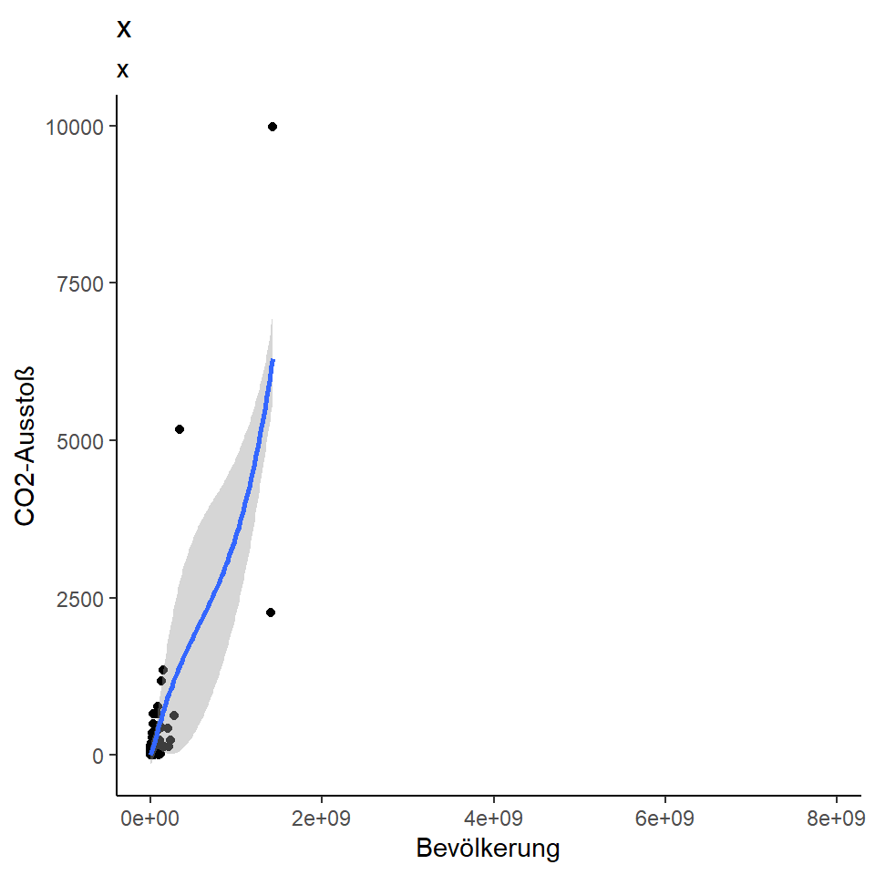

here() starts at C:/R/PlotWorkshop/PlotWorkshop
Attache Paket: 'janitor'Die folgenden Objekte sind maskiert von 'package:stats':
chisq.test, fisher.testLade nötiges Paket: ggplot2here() starts at C:/R/PlotWorkshop/PlotWorkshop
Attache Paket: 'janitor'Die folgenden Objekte sind maskiert von 'package:stats':
chisq.test, fisher.testLade nötiges Paket: ggplot2Bild von Allison Horst.
# install.packages("tidyverse")
library(tidyverse)
… kann aber natürlich auch seperat geladen werden:
# install.packages("ggplot2")
library(ggplot2)Erste Schritte.
Foto von Omar Lopez auf Unsplash
Wir nutzen Daten von Gapminder.
Gapminder sammelt diverse Indikatoren über viele Jahre aus allen Ländern weltweit, z.B. Lebenserwartung, GDP, CO2-Verbrauch und viele mehr.
Bekannt sind vor allem die Bubble-Plots.

Zuerst schauen wir uns nur eins der Jahre genauer an:
gapminder_dat <- gapminder_dat_full %>%
filter(time == "2020")ggplot()ggplot()ggplot(data = gapminder_dat)
Um diese leere Leinwand zu befüllen, müssen wir die Daten mit den benötigten visuellen Eigenschaften verknüpfen:
mapping = aes()
Je nach Plot-Art sind verschiedene visuelle Eigenschaften möglich. Wichtig ist für uns jetzt erst einmal die Position, also x - und y-Achsen.
Es kann hier aber z.B. auch die Farbe der Punkte in Agnhängikeit von Kategorien in den Daten geändert werden.
ggplots sind aus verschiedenen Layern aufgebaut, die mithilfe eines + übereinander gelegt werden.
geom_
ggplot(
data = gapminder_dat,
mapping = aes(
x = pop,
y = co2_cons
)
) +
geom_point() +
geom_smooth()`geom_smooth()` using method = 'loess' and formula = 'y ~ x'Warning: Removed 7 rows containing non-finite outside the scale range
(`stat_smooth()`).Warning: Removed 7 rows containing missing values or values outside the scale range
(`geom_point()`).
ggplot(
data = gapminder_dat,
mapping = aes(
x = pop,
y = co2_cons
)
) +
geom_point() +
geom_smooth() +
labs(
title = "x",
subtitle = "x",
x = "Bevölkerung",
y = "CO2-Ausstoß"
)`geom_smooth()` using method = 'loess' and formula = 'y ~ x'Warning: Removed 7 rows containing non-finite outside the scale range
(`stat_smooth()`).Warning: Removed 7 rows containing missing values or values outside the scale range
(`geom_point()`).
ggplot(
data = gapminder_dat,
mapping = aes(
x = pop,
y = co2_cons
)
) +
geom_point() +
geom_smooth() +
labs(
title = "x",
subtitle = "x",
x = "Bevölkerung",
y = "CO2-Ausstoß"
) +
theme_classic()`geom_smooth()` using method = 'loess' and formula = 'y ~ x'Warning: Removed 7 rows containing non-finite outside the scale range
(`stat_smooth()`).Warning: Removed 7 rows containing missing values or values outside the scale range
(`geom_point()`).
Hier dann nochmal genauer durchgehen - Was haben wir eigentlich gemacht. Nicht zu sehr in den Basics verlieren, auch schneller tiefer reingehen (scales, coord system …)
https://questionsindataviz.com/2023/12/29/what-makes-a-truly-terrible-map/